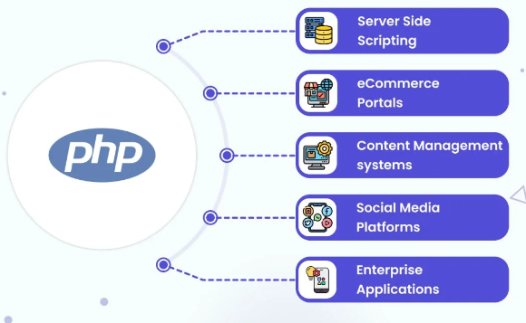

PHP: The Versatile Language Powering the Web
PHP (Hypertext Preprocessor) is a widely-used open-source scripting language that is especially suited for web development...
Why PHP?
- Ease of Use One of PHP's greatest strengths is its simplicity...
- Server-Side Execution PHP is a server-side scripting language, which means that the code runs on the web server...
- Open Source As an open-source language, PHP is freely available and maintained by a community of developers worldwide...
Core Features of PHP
- Cross-Platform Compatibility PHP runs on most major platforms, including Windows, macOS, Linux...
- Database Integration PHP provides excellent support for working with databases...
- Support for Multiple Protocols PHP is not limited to just web development...
- Object-Oriented Programming (OOP) Since PHP 5, the language has had robust support for object-oriented programming (OOP)...
- Security While no language is immune to security risks, PHP has made great strides...
Popular PHP Frameworks

- Laravel Laravel is one of the most widely-used PHP frameworks...
- Symfony Symfony is a highly flexible PHP framework...
- CodeIgniter CodeIgniter is a lightweight PHP framework...
- CakePHP CakePHP is a framework that emphasizes convention over configuration...
Use Cases of PHP
- Content Management Systems (CMS) PHP powers many of the world’s most popular content management systems...
- E-Commerce Applications Many e-commerce platforms, such as Magento, OpenCart...
- Social Media Platforms PHP is also used in the development of social media sites...
- Web Applications PHP is widely used to build interactive, database-driven web apps...
The Future of PHP
While newer languages and technologies continue to emerge, PHP remains a dominant force in web development...
Conclusion
PHP has stood the test of time as one of the most reliable and widely-used programming languages for web development...